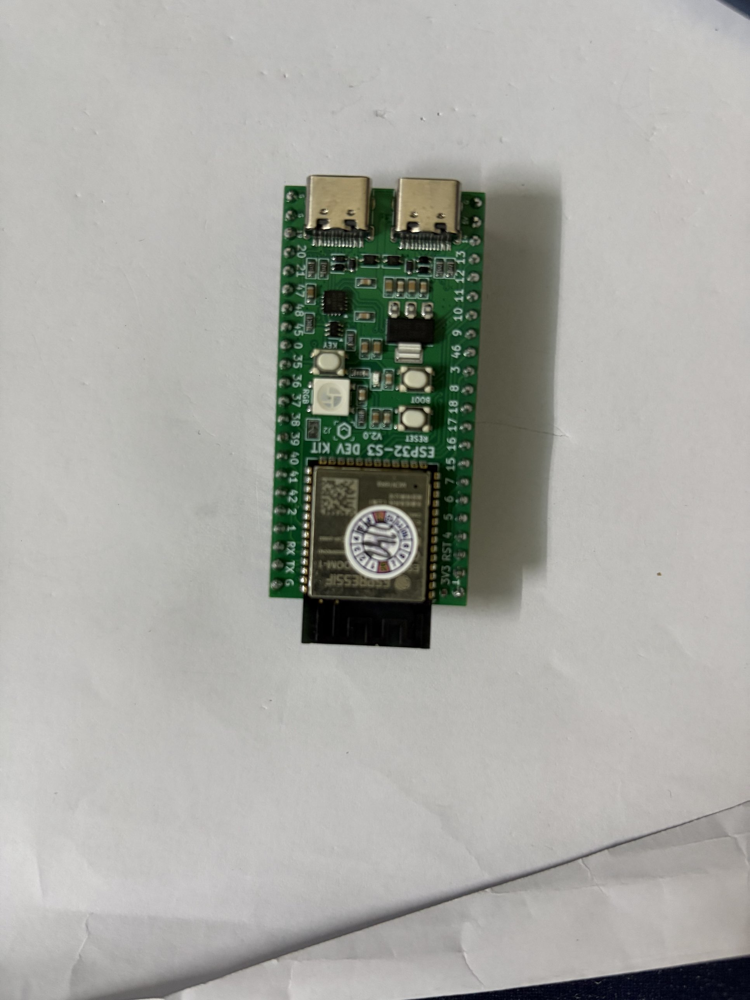
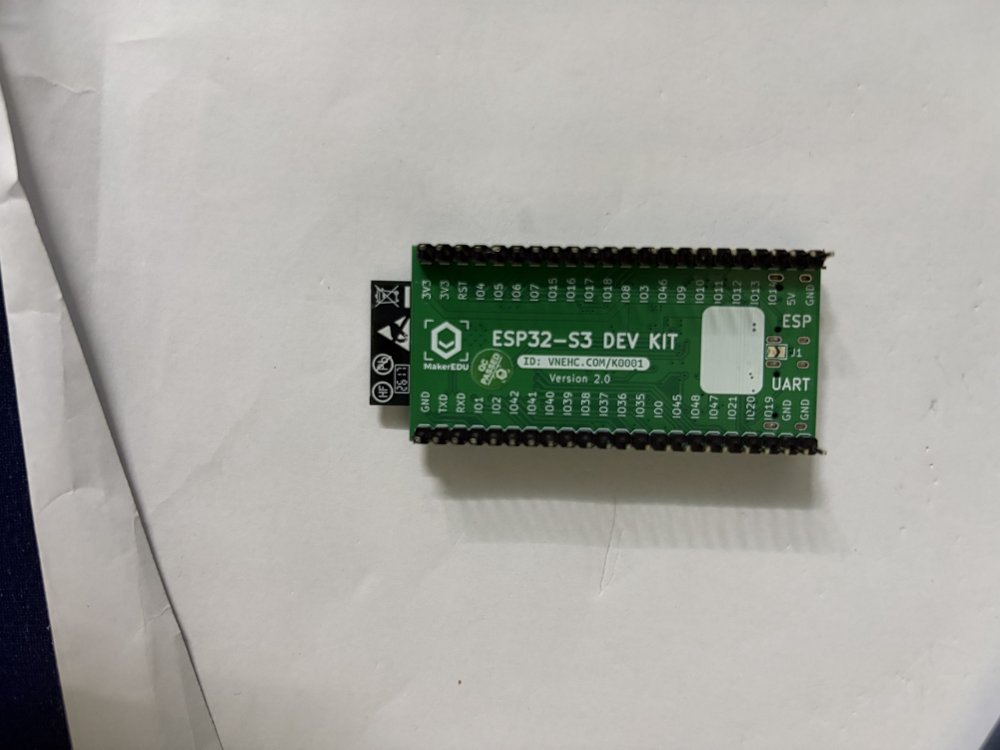
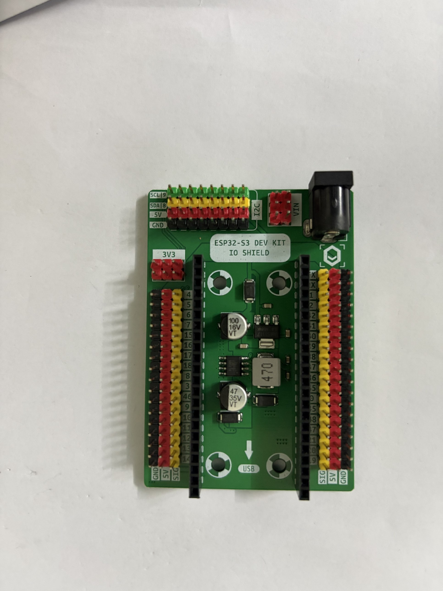
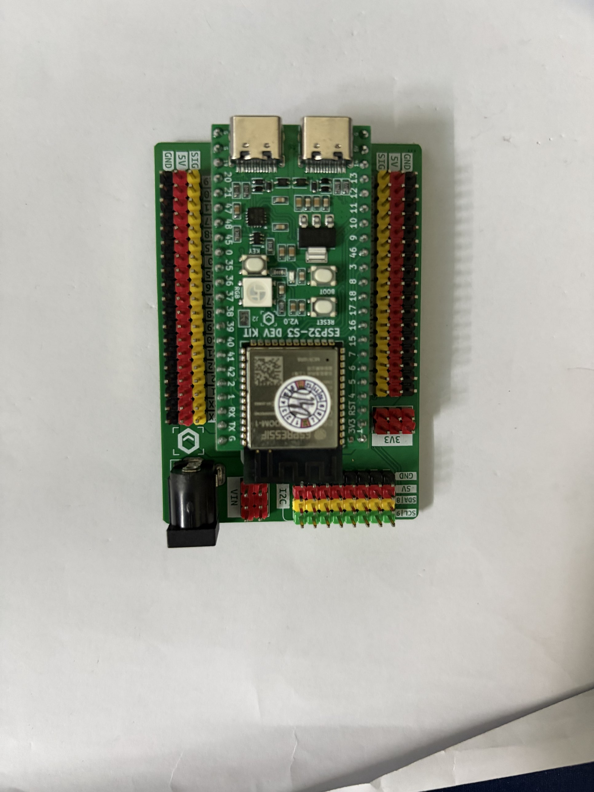

Giới thiệu ESP32-S3
Giới thiệu ESP32-S3
Note tham khảo về vi điều khiển ESP32-S3 và board phát triển ESP32-S3 DevKit dùng cho các lab có kết nối mạng. Phần nền tảng Arduino xem ở bài Giới thiệu Arduino & board Arduino Uno.
ESP32-S3 là gì
ESP32-S3 là dòng vi điều khiển (SoC) của hãng Espressif, tích hợp sẵn Wi-Fi và Bluetooth Low Energy trên cùng một chip. Khác với Arduino Uno (không có mạng, phải gắn thêm module), ESP32-S3 tự kết nối được Internet, nên phù hợp làm thiết bị tầng cảm biến + kết nối trong kiến trúc IoT: đọc cảm biến rồi gửi dữ liệu lên broker MQTT, server hoặc cloud (xem MQTT).
Chip S3 là thế hệ mới trong họ ESP32, bổ sung so với ESP32 gốc:
- Lõi Xtensa LX7 (thay LX6), có thêm tập lệnh vector giúp chạy mô hình AI/ML nhỏ (nhận dạng giọng nói, hình ảnh) nhanh hơn.
- USB OTG gốc trên chip: có thể làm USB device (giả lập bàn phím, chuột, ổ đĩa…).
- Hỗ trợ camera (giao diện DVP) và màn hình LCD song song.
- Chỉ có Bluetooth LE 5, không có Bluetooth Classic (ESP32 gốc có cả hai).
Thông số chính
| Thông số | Giá trị |
|---|---|
| Lõi xử lý | 2 lõi Xtensa LX7 32 bit, tối đa 240 MHz |
| SRAM | 512 KB (trên chip) |
| Flash / PSRAM | Nằm ngoài chip, tùy module (ví dụ 8 MB flash, 8 MB PSRAM) |
| Wi-Fi | 802.11 b/g/n, băng tần 2,4 GHz |
| Bluetooth | Bluetooth LE 5 |
| Mức logic | 3,3 V (chân I/O không chịu được 5 V) |
| GPIO | Tối đa 45 chân, hỗ trợ PWM, ADC, I²C, SPI, UART, I²S, touch… |
| ADC | 12 bit (0–4095), 2 bộ ADC |
| Nguồn cấp | USB 5 V (board hạ xuống 3,3 V qua bộ ổn áp) |
So sánh nhanh với Arduino Uno:
| Arduino Uno R3 | ESP32-S3 | |
|---|---|---|
| Vi điều khiển | ATmega328P, 8 bit, 16 MHz | Xtensa LX7, 32 bit, 2 lõi, tới 240 MHz |
| RAM | 2 KB | 512 KB (+ PSRAM nếu có) |
| Mức logic | 5 V | 3,3 V |
| ADC | 10 bit (0–1023) | 12 bit (0–4095) |
| Kết nối mạng | Không | Wi-Fi + Bluetooth LE |
| Cổng USB | USB-B | USB-C |
Board ESP32-S3 DevKit trong kit
Kit gồm hai phần ghép với nhau:
- ESP32-S3 DEV KIT V2.0 (hãng MakerEDU): board chính gắn module ESP32-S3-WROOM-1 của Espressif, có sẵn mạch nguồn, hai cổng USB-C, nút bấm, LED RGB và hai hàng chân đánh số GPIO.
- IO Shield: board mở rộng cắm khớp bên dưới, kéo mỗi chân GPIO ra bộ 3 chân
GND – 5V – SIGđể cắm thẳng cảm biến/servo bằng dây 3 sợi, không cần breadboard.
Board chính

| Khu vực | Mô tả |
|---|---|
| Module ESP32-S3-WROOM-1 | Khối kim loại có tem ở nửa dưới board; phần anten PCB (vân đen) nhô ra ngoài mép board: không che bằng tay/vật kim loại khi dùng Wi-Fi |
| Hai cổng USB-C | Phía trên board. Một cổng qua chip cầu nối USB–UART (nạp code + Serial Monitor), một cổng là USB gốc của chip (USB OTG/JTAG) |
Nút BOOT |
Nối GPIO0; giữ khi cấp điện hoặc nhấn RESET để vào chế độ nạp firmware |
Nút RESET |
Khởi động lại chương trình |
Nút KEY |
Nút bấm người dùng, đọc được bằng code (dùng thử digitalRead) |
LED RGB |
Đèn RGB trên board để thử nhanh |
| Hai hàng chân hai bên | Số in trên board là số GPIO; ngoài ra có 3V3, 5V, GND, RST, TX, RX |
Mặt sau in nhãn đầy đủ IOxx cho từng chân, cùng chân 3V3, 5V, GND. Có hai cụm pad ESP và UART (kèm J1) ở cạnh chân 5V/GND.

IO Shield

| Khu vực | Mô tả |
|---|---|
| Hai khe cắm (socket) giữa board | Cắm ESP32-S3 vào, đầu USB-C hướng về phía mũi tên USB in trên shield |
| Hai cột chân bên trái/phải | Mỗi GPIO một bộ 3 chân: SIG (vàng, tín hiệu GPIO), 5V (đỏ), GND (đen). Số bên cạnh là số GPIO |
Cụm I2C |
8 bộ SCL (xanh lá, GPIO9), SDA (vàng, GPIO8), 5V, GND song song, cắm được nhiều module I²C |
Cụm 3V3 |
Các chân 3,3 V cho module cần 3,3 V |
Jack DC + cụm VIN |
Cấp nguồn ngoài qua jack DC; mạch giảm áp (cuộn 470, tụ 100 µF/16 V và 47 µF/35 V, IC ổn áp) tạo ra nguồn 5 V cho cả board |

[!NOTE] Chân
SIGtrên shield là GPIO nối thẳng, mức logic 3,3 V, dù hàng bên cạnh có chân5V. Cấp 5 V cho cảm biến thì được, nhưng tín hiệu đưa ngược vàoSIGphải ≤ 3,3 V (xem phần lưu ý bên dưới). Tên chân là số GPIO (ví dụGPIO4), không cóD/Anhư Uno; chân nào đọc analog được là do ADC gắn với chân đó.
Lập trình
Có thể dùng Arduino IDE với gói board esp32 by Espressif Systems (Boards Manager), viết sketch với setup()/loop() quen thuộc, nên các hàm như pinMode, digitalWrite, Serial.print dùng như trên Uno. Ngoài ra còn có ESP-IDF (framework chính hãng, C/C++) và MicroPython.
Các điểm khác Uno khi viết code:
analogRead()trả về 0–4095 (12 bit), không phải 0–1023.analogWrite()dùng được trên mọi chân (PWM do phần cứng LEDC cấp).- Kết nối Wi-Fi bằng thư viện
WiFi.hđi kèm gói board:
#include <WiFi.h>
void setup() {
Serial.begin(115200);
WiFi.begin("TEN_WIFI", "MAT_KHAU");
while (WiFi.status() != WL_CONNECTED) {
delay(500);
Serial.print(".");
}
Serial.println(WiFi.localIP());
}
void loop() {}- Chọn board trong Arduino IDE:
Tools → Board → esp32 → ESP32S3 Dev Module; nếu dùng cổng USB gốc cần bậtUSB CDC On Boot: Enabledđể Serial Monitor hoạt động.
Lưu ý khi lắp mạch
- Logic 3,3 V: không đưa tín hiệu 5 V vào chân GPIO. Cảm biến/module 5 V (ví dụ HC-SR04 chân
ECHO) cần chia áp hoặc chuyển mức logic. - Chân
3V3cấp được dòng nhỏ; module tải lớn (servo, motor, dải LED) dùng chân5Vhoặc nguồn ngoài, và phải chung GND. - Mỗi chân GPIO nên giữ ≤ 20 mA.
- Một số chân có vai trò riêng khi khởi động (strapping, như GPIO0, GPIO3, GPIO45, GPIO46) hoặc dành cho flash/PSRAM nội bộ (khoảng GPIO26–37 tùy module): tránh dùng cho cảm biến/nút bấm nếu không cần thiết.
- Rút USB trước khi đổi dây, như với Uno.
- Nếu không nạp được code: giữ nút
BOOT, nhấnRSTrồi thảBOOT, sau đó nạp lại.